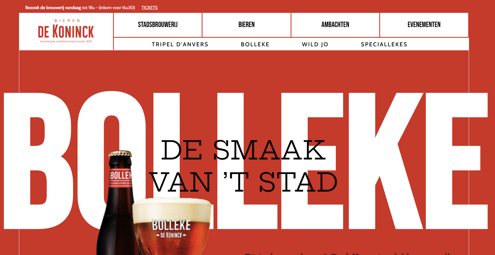

Brouwerij De Koninck Case
This was undoubtedly one of the most challenging assignments so far. Recreating the De Koninck website for @work1 required a systematic and structured approach. Although it was incredibly frustrating at times, it helped me take huge steps in my process as a developer.
